МИНИСТЕРСТВО НЕФТЯНОЙ ПРОМЫШЛЕННОСТИ СССР
ВСЕСОЮЗНЫЙ
НАУЧНО-ИССЛЕДОВАТЕЛЬСКИЙ
И ПРОЕКТНО-КОНСТРУКТОРСКИЙ ИНСТИТУТ
ПО ПРОБЛЕМАМ ОСВОЕНИЯ НЕФТЯНЫХ И ГАЗОВЫХ РЕСУРСОВ
КОНТИНЕНТАЛЬНОГО ШЕЛЬФА
(ВНИИПИморнефтегаз)
ВЕДОМСТВЕННЫЕ
СТРОИТЕЛЬНЫЕ НОРМЫ
(ЭКСПЕРИМЕНТАЛЬНЫЕ)
ПРОЕКТИРОВАНИЕ
ЛЕДОСТОЙКИХ
СТАЦИОНАРНЫХ ПЛАТФОРМ
ВСН 41.88
Миннефтепром
Москва - 1988
Разработаны: ВНИПИморнефтегаз Миннефтепрома СССР (к.т.н. Мирзоев Д.А. - руководитель разработки; д.ф.н. Вершинин С.А., к.ф.м.н. Нагрелли В.Э. - руководители темы; к.т.н. Абаджян К.А., к.т.н. Левенко А.И., Серебрякова А.А., к.т.н. Суровцев В.П., к.т.н. Упоров А.В.) при участии: МИСИ им. В.В. Куйбышева Госкомобразования СССР (к.т.н. Алмазов В.О., к.т.н. Колесников Ю.М., к.т.н. Курилло С.В., к.т.н. Куликов Г.С., к.т.н. Левачев С.Н., к.т.н. Плешаков А.В., к.т.н. Халфин И.Ш.); ЦНИИпроектстальконструкция им. Мельникова Госстроя СССР (к.т.н. Гладштейн Л.И., к.т.н. Кравченко В.Г., д.т.н. Голубев А.И., Деренковский В.И., к.т.н. Евдокимов В.В., к.т.н. Баско Е.М., Купалов К.К., д.т.н. Котляревский В.А., д.т.н. Ларионов В.В., к.т.н. Морозов Е.П., к.т.н. Петров А.А., д.т.н. Соколов А.Г.); ВНИИОСП им. Герсеванова Госстроя СССР (д.т.н. Ильичев В.А., к.т.н. Зиновьев Б.М., к.т.н. Лиховцев В.М., к.т.н. Мариупольский Л.Г., к.ф.м.н. Федоровский В.Г.); НИИЖБ Госстроя СССР (к.т.н. Булгакова М.Г., д.т.н. Гудзеев Е.А., к.т.н. Кравченко Т.Г.); ИГМ АН УССР (д.ф.м.н. Селезов И.Т., к.ф.м.н. Яковлев В.В.); Фундаментпроект Минмонтажспецстроя СССР (Кисин Б.Ф., Ханин Р.Е.); ИЭС им. Патона АН УССР (к.т.н. Гарф Э.Ф., к.т.н. Гиренко B.C., к.т.н. Новиков В.И.); НИПИ «Гипроморнефтегаз» Миннефтепрома СССР (Таирли З.М.).
Внесены ВНИПИморнефтегаз Миннефтепрома СССР.
Согласованы:
- Госстроем СССР - АЧ-2054-8 от 26.05.88;
- Госгортехнадзором СССР - 04-1-40/86 от 27.02.87;
- Министерством рыбного хозяйства СССР - 02-44/4294 от 02.06.87;
- Министерством мелиорации и водного хозяйства СССР - 13-5-01/470 от 15.06.87.
Подготовлены к утверждению отделом по строительству морских стационарных платформ Главморнефтестроя Миннефтепрома СССР (Мзареулян А.Д.)
Введены в действие приказом Министерства нефтяной промышленности СССР от 03.01.1989 г. № 1.
|
Министерство
нефтяной промышленности СССР |
Ведомственные строительные нормы |
ВСН 41.88 |
|
Проектирование морских ледостойких стационарных платформ |
Настоящие Ведомственные строительные нормы и правила распространяются на вновь возводимые и реконструируемые морские стационарные платформы, сооружаемые на акваториях замерзающих морей с целью добычи нефти и газа.
|
Утверждены 1-ым зам. Министра Миннефтепрома от "15" 09 1988 г. |
Срок
введения в действие |
1. ОБЩИЕ ПОЛОЖЕНИЯ
1.1. Основные требования к конструкции сооружения
1.1.1. Морские ледостойкие стационарные платформы (ЛСП) являются объектами обустройства морских нефтегазопромысловых месторождений. Класс сооружения определяется в соответствии со СНиП 2.06.01-86 «Гидротехнические сооружения. Основные положения проектирования».
1.1.2. При проектировании ЛСП следует учитывать опыт строительства, эксплуатации и результатов исследований морских и речных гидротехнических сооружений.
1.1.3. При проектировании ЛСП кроме требований настоящих норм должны учитываться требования действующих государственных стандартов, норм и правил общесоюзных нормативных документов по проектированию, а также требования по обеспечению безопасности работ, охране окружающей среды в период разведки, строительства, эксплуатации.
1.1.4. Проектирование должно осуществляться с учетом требований безопасной, бесперебойной и экологически безвредной эксплуатации в течение всего срока службы сооружения, а также обеспечения удобства ведения работ по осмотру и текущему ремонту сооружения.
1.1.5. Морские ледостойкие платформы должны проектироваться исходя из общей схемы обустройства месторождения, на основе комплексного подхода к освоению нефтегазоносного района и смежных отраслей народного хозяйства.
1.1.6. Тип ЛСП и ее конструкцию следует выбирать на основании технико-экономического сравнения вариантов согласно СНиП 2.06.01-86 и задания на проектирование по СНиП 1.02.01-85 с учетом:
проекта разработки месторождения;
правил охраны прибрежных вод, морей и законодательства по охране экологической зоны СССР;
природных условий района строительства (климатических, инженерно-геологических, геокриологических, сейсмических, гидрологических и других условий природной среды) и прогноза их изменения;
наличия транспортно-монтажных средств;
условий и методов производства работ;
требований технологических правил по экономному расходованию основных строительных материалов;
размещения индустриальных баз и их технологических возможностей.
1.1.7. При проектировании ЛСП следует обеспечить:
прочность и устойчивость сооружения и его элементов на стадиях изготовления, транспортировки, монтажа и эксплуатации;
наиболее полное использование местных строительных материалов;
наименьшую продолжительность строительно-монтажных работ, выполняемых непосредственно на акватории;
индустриализацию процессов изготовления, транспортировки, установки и крепления на месте строительства;
эстетическое и архитектурное оформление;
унификацию компоновки оборудования, конструкции и методов производства работ;
необходимую автономность работы технологических модулей;
соблюдение требований действующих законодательств по охране окружающей среды, а также международных договоров СССР, правил охраны от загрязнения прибрежных вод морей и законодательства по охране экономической зоны СССР;
пожарную безопасность и оснащение средствами пожаротушения в период строительства и эксплуатации;
1.1.8. Для обоснования исходных данных, необходимых для проектирования ЛСП, следует проводить инженерные изыскания в соответствии с требованиями СНиП II-19-79, СНиП 2.02.02-85, ВСН 51.2.-84.
1.1.9. При проектировании ЛСП необходимо предусмотреть установку соответствующего стационарного оборудования, КИП и КИА для выполнения режимных и контрольных наблюдений и исследований при эксплуатации сооружений.
1.1.10. Материалы по выбору площадки для установки ЛСП должны быть согласованы с контролирующими органами в установленном порядке.
1.1.11. Технологическая площадка ЛСП должна иметь минимальные необходимые размеры в соответствии с требованиями технологического процесса.
1.1.12. Настил палубы ЛСП должен проектироваться из материала, обеспечивающего прочность и непроницаемость с высотой отбортовки не менее 200 мм с целью предотвращения загрязнения морской среды отходами производства в процессе бурения, опробования и эксплуатации скважин.
Конструкция настила должна соответствовать ГОСТ 17.1.3.02-77.
1.1.13. В соответствии со СТ СЭВ 384-76 и СНиП II-7-81 для головных образцов опорных частей ЛСП обязательно проведение натурных экспериментальных исследований на стадиях транспортировки, монтажа и последующего периода эксплуатации, а также модельных исследований в процессе проектирования. При повторном применении ЛСП экспериментальные работы производят по сокращенным программам.
1.1.14. При проектировании ЛСП необходимо применять методы математического моделирования.
1.1.15. Все надводные элементы ЛСП должны быть доступны для безопасного осмотра и обслуживания. С этой целью необходимо предусматривать люки, ходы, лестницы, перильные ограждения, специальные смотровые площадки, позволяющие вести работы в период эксплуатации.
1.1.16. При выборе конструктивной схемы и технического решения ЛСП необходимо предусматривать разбивку на сборочные единицы, размеры и масса которых допускает транспортировку, установку и крепление существующими техническими средствами, установленными заданием на проектирование.
1.1.17. При проектировании ЛСП ориентацию по частям света следует принимать такой, чтобы в направлении с наибольшими ветро-волновыми параметрами сооружение воспринимало возможно меньшее воздействие. Жилой блок следует располагать со стороны господствующих ветров, а вышку и факел - с противоположной стороны. Мероприятия по охране природной среды должны проектироваться комплексно на основе прогноза ее изменения в связи со строительством ЛСП.
1.1.18. При проектировании ЛСП должна быть предусмотрена разработка технологических мероприятий по предупреждению аварийных разливов на поверхности морской акватории.
1.1.19. При проектировании ЛСП следует предусмотреть мероприятия по тампонажу скважин после окончания их эксплуатации.
1.1.20. Выбор типа фундаментов должен производиться на основании вариантных проработок, учитывающих требования технологического характера, требования по эксплуатации, монтажу и демонтажу всего комплекса оборудования, результатов инженерно-геологических изысканий и экологических требований, а также требований по снижению сроков строительства.
1.1.21. Тип фундамента ЛСП должен выбираться в зависимости от технико-экономических показателей сравнения вариантов и инженерно-геологических условий.
1.1.22. Морские стационарные платформы должны оборудоваться причально-посадочными устройствами для подхода судов и посадки-высадки людей, которые располагаются с двух сторон сооружения и должны возвышаться над высшим годовым уровнем моря не менее чем на 1,5 м.
Высота причальной площадки должна учитывать условия швартовки и высадки людей.
1.1.23. ЛСП должны оборудоваться вертолетными площадками. Проектирование осуществляется в соответствии с требованиями ОАТ ГА-80 «Общие авиационные требования к средствам обеспечения вертолетов на судах и приподнятых над водой платформах».
Вертолетные площадки следует располагать в противоположной от бурящихся скважин стороне.
1.1.24. Ледорезную зону опорной части ЛСП следует проектировать с учетом абразивного износа поверхности.
1.1.25. Отметку верха ЛСП следует назначать так, чтобы зазор Dh, м, между вершиной расчетной волны с учетом ветрового нагона и прилива и нижней гранью надводных строений был не менее 10 % от высоты волны.
Нкл = Нy max + hо max + Dhвн + Нпр + Dh
Нкл - отметка нижней грани надводных строений морской стационарной платформы, м, отсчитываемая от нуля Кронштадтского футштока;
Нy max - наивысший годовой уровень моря обеспеченностью 1 %, м, отсчитываемый от нуля Кронштадтcкого футштока;
hо max - определяется по п. 2.3.9.
Dhвн - наибольший ветровой нагон, м;
Нпр - наибольшая высота прилива, м.
Возвышение низа палубной части платформы должно быть не менее 8hл, где hл - расчетная толщина льда 1 % обеспеченности.
1.2. Основные расчетные положения
1.2.1. Расположение ЛСП в плане следует производить в соответствии со схемой обустройства месторождения так, чтобы внешние нагрузки и воздействия были минимальными.
1.2.2. Конструкции ЛСП и основания следует рассчитывать по методу предельных состояний в соответствии со СНиП 2.06.01-86.
1.2.3. Расчетную схему ЛСП следует принимать в виде пространственной конструкции.
1.2.4. Усилия в отдельных элементах сооружений должны определяться в наиболее невыгодных положениях и сочетаниях, возможных в период строительства и эксплуатации сооружения.
1.2.5. При определении усилий в элементах сооружения нагрузку от волн и течения допускается принимать в виде сосредоточенных сил, приложенных в узлах расчетной схемы конструкции.
1.2.6. Расчетное значение нагрузки определяется умножением нормативного значения нагрузки на соответствующие коэффициенты надежности по нагрузке gf. Нагрузки и значения коэффициента gf при расчетах по первой группе предельных состояний определяют по таблице 1 и СНиП 2.06.01-86. Перечень нагрузок и воздействий приведен в таблице 1.
1.2.7. Значения коэффициентов надежности по материалам gm и грунтам gg, применяемых для определения расчетных сопротивлений материалов и характеристик грунтов, а также коэффициент условия работы gc приводятся в соответствующих разделах ВСН.
1.2.8. При расчетах ЛСП по 2-ой группе предельных состояний значения коэффициентов надежности по нагрузке gf, по материалам gm и грунтам gg принимают равными 1.
1.2.9. Расчет фундаментов ЛСП должен производиться по предельным состояниям двух групп:
а) по первой группе:
по прочности конструкции;
по несущей способности грунта основания;
б) по второй группе:
по осадкам фундаментов от вертикальных нагрузок;
по перемещениям (вертикальным, горизонтальным и углам поворота) совместно с грунтом основания от действия вертикальных, горизонтальных нагрузок и моментов;
по образованию и величине раскрытия трещин в элементах железобетонных конструкций.
Таблица 1
|
Коэффициент надежности по нагрузке |
|
|
1. Постоянные нагрузки |
|
|
а. собственный вес сооружения (конструкции опорных блоков, верхних строений платформы) |
1,05 (0,95) |
|
б. давление воды непосредственно на поверхность сооружения, основания, поровое давление |
1,0 |
|
в. модули (порожние) |
1,05 (0,95) |
|
г. вес настила, выравнивающего слоя и изоляционного слоя |
1,3 (0,9) |
|
2. Временные нагрузки |
|
|
а. собственный вес буровой вышки и стационарного оборудования |
1,05 (0,95) |
|
б. вес заполнения оборудования, трубопроводов, резервуаров жидкостями |
1,00 |
|
в. нагрузки от веса бурильных труб, хим. реагентов и других материалов, располагаемых россыпью |
1,2 (0,8) |
|
г. вес заполнения оборудования, трубопроводов шламами, сыпучими материалами |
1,1 (0,9) |
|
3. Кратковременные нагрузки |
|
|
а. ветровая нагрузка |
1,0 |
|
б. нагрузка от волн и течения |
1,0 |
|
в. нагрузка от льда: |
|
|
ровного |
1,0 |
|
торосистого |
1,3 - 1,5* |
|
г. нагрузка от навала судов |
1,1 |
|
д. нагрузка от вертолетов |
в соответствии с ОА ТГА-80 |
|
е. нагрузка и воздействия от обледенения надводных конструкций |
1,3 |
|
ж. монтажные нагрузки (строительные): |
|
|
от механизмов |
1,1 (0,9) |
|
от поднимающихся сборочных частей |
1,2 (0,9) |
|
4. Специальные воздействия |
|
|
а. биологическое обрастание |
1,2 |
|
б. химическое воздействие |
1,0 |
|
5. Особые нагрузки |
|
|
(При особом сочетании нагрузок они заменяют соответствующие им временные длительные и кратковременные нагрузки) |
|
|
а. сейсмические воздействия |
1,0 |
|
б. давление волны (при максимальной расчетной скорости ветра) |
1,0 |
|
г. ледовые нагрузки при максимальной многолетней толщине льда |
1,1 |
|
д. температурные воздействия строительного и эксплуатационного периодов, определяемые для года с наибольшей амплитудой колебаний среднемесячных температур |
1,1 |
Примечания:
1. Значения коэффициента надежности по нагрузке, указанные в скобках, относятся к случаю, когда применение минимальных значений коэффициентов приводит к невыгодному случаю загружения сооружения, а также при расчете на устойчивость положения.
2. При определении собственного веса подводной части необходимо учитывать вес элементов в воде.
3. Коэффициент торосистости Кт принимается: для Балтийского, Черного, Азовского, Северного Каспия - 1,3; для Охотского моря и арктического бассейна - 1,5.
1.2.10. Внешние нагрузки на фундаменты ЛСП: осевые, сжимающие, выдергивающие, горизонтальные силы и моменты должны задаваться в уровне подошвы гравитационного сооружения или в уровне центров опорных узлов свайных конструкций.
Примечание: На первоначальной стадии проектирования нагрузки на фундамент допускается определять в уровне опорных закреплений расчетной схемы сооружения, жесткостные параметры которых определяются на основе предварительного расчета фундамента.
1.2.11. При проектировании фундаментов ЛСП необходимо учитывать циклический характер воздействия основных видов нагрузки (волновой, ветровой, сейсмической). При этом повторяющиеся нагрузки принимаются как кратковременно действующие квазистатические с учетом многократности их приложения за расчетный период.
1.2.12. Расчет фундаментов ЛСП производится на нагрузки эксплуатационного и строительного периодов; строительный период не должен быть определяющим при назначении основных размеров фундаментов.
1.2.13. Нагрузки от технологического оборудования следует принимать в зависимости от технологической схемы нагрузок и запаса материалов, определенных исходя из условий автономности сооружения.
1.2.14. ЛСП следует рассчитывать на основные и особые сочетания нагрузок и воздействий. Указания о сочетаниях нагрузок и воздействий приведены в СНиП 2.06.01-86.
1.2.15. Нагрузки и воздействия на ЛСП необходимо уточнять на основе данных натурных наблюдений и лабораторных исследований.
1.2.16. Расчетные характеристики температуры следует определять для наиболее неблагоприятных сочетаний температур окружающей среды и технологических температур ЛСП.
1.2.17. Для конструкций, в которых предусмотрены системы тепловой защиты от смерзания с ледяным полем и обледенения, распределение температуры определяется специальным расчетом.
2. НАГРУЗКИ И ВОЗДЕЙСТВИЯ
2.1. Нагрузки и воздействия льда
2.1.1. Настоящие нормы рассматривают максимальные нагрузки и воздействия от льда на опоры сооружений, возводимых на шельфе замерзающих морей, при скоростях подвижек ледяных полей до 0,5 м/с. Нагрузки от ледяных полей конечных размеров в открытом море, имеющих скорость дрейфа свыше 0,5 м/с, следует определять в соответствии с рекомендациями СНиП 2.06.04-82*.
Нормативное значение ледовой нагрузки определяется на основании:
статистических данных о гидрологическом и ледовом режимах района расположения сооружения (среднесуточной температуре воздуха, солености воды и льда, характере колебаний уровня воды, толщине льда, его торосистости, характере подвижек (дрейфа) ледяных полей);
физико-механических свойств льда;
данных о геометрических параметрах опоры и условий ее контакта со льдом.
2.1.2. К основным прочностным характеристикам, определяющим величину ледовой нагрузки на сооружение, относятся:
а) нормативное сопротивление льда сжатию Rс, МПа;
б) нормативное сопротивление льда изгибу Rf, МПа.
2.1.3. За нормативные значения Rс, Rf принимаются средние значения опытных данных испытаний образцов льда на прочность.
При отсутствии таких данных допускается нормативные сопротивления льда сжатию и изгибу принимать по таблицам 2 и 3 соответственно.
Основные положения проведения испытания образцов при определении опытных значений Rс и Rf и приведены в обязательном приложении 1.
Таблица 2
|
Соленость льда S, %o |
Нормативное сопротивление льда сжатию Rс, МПа, при среднесуточной температуре воздуха ta, °С |
|||
|
- 2° |
- 10° |
- 20° |
- 30° |
|
|
1 и менее |
1,00 |
1,40 |
1,50 |
1,55 |
|
2 |
0,75 |
1,25 |
1,35 |
1,45 |
|
3 |
0,60 |
1,15 |
1,30 |
1,40 |
|
4 |
0,40 |
1,10 |
1,25 |
1,30 |
|
5 |
0,30 |
1,00 |
1,20 |
1,25 |
|
6 |
0,20 |
0,95 |
1,15 |
1,20 |
Таблица 3
|
Соленость льда S, %o |
Нормативное сопротивление льда изгибу Rf, МПа, при среднесуточной температуре воздуха ta,°С |
|||
|
- 2° |
- 10° |
- 20° |
- 30° |
|
|
1 и менее |
0,50 |
0,60 |
0,65 |
0,70 |
|
2 |
0,40 |
0,55 |
0,60 |
0,65 |
|
3 |
0,30 |
0,50 |
0,55 |
0,60 |
|
4 |
0,25 |
0,45 |
0,50 |
0,55 |
|
5 |
0,20 |
0,40 |
0,45 |
0,50 |
|
6 |
0,15 |
0,35 |
0,40 |
0,45 |
где ta - средняя температура воздуха за самую холодную шестидневку в году по 5-летнему ряду наблюдений;
S - соленость льда принимают равной 15 % солености воды для льда возрастом 2 месяца и более.
Примечание. В табл. 3 приведены осредненные, не зависящие от направления прогиба, значения Rf.
2.1.4. Морские опоры, имеющие частоты собственных колебаний более 2 Гц, следует рассчитывать как абсолютно жесткие конструкции на следующие виды воздействий:
а) воздействие ровных и торосистых ледяных полей при их горизонтальных подвижках;
б) воздействие примерзшего к сооружению ледяного покрова при колебаниях уровня воды.
2.1.5. Точку приложения равнодействующей ледовой нагрузки необходимо принимать ниже расчетного уровня воды на 0,3hd.
Fb,p = m1×Kb×Rc×b×hd, МН (1)
где m1 - коэффициент, учитывающий форму опоры в плане и принимаемый равным:
для круглых и многогранных опор - 1,0,
для прямоугольных опор - 1,1;
b - поперечный размер по фронту опоры на уровне действия льда, м;
hd - расчетная толщина ровного ледяного поля, м, принимаемая равной максимальной толщине льда 1 %-ной обеспеченности;
Kb - коэффициент смятия, учитывающий пространственно-напряженную работу ледяного поля при его прорезании и принимаемый по табл. 4 в зависимости от b/hd и условий контакта опоры с ледяным полем.
Таблица 4
|
b/hd |
1 |
2 |
4 |
6 |
7 |
10 |
12 |
16 |
20 |
30 и более |
|
|
Коэффициент смятия Kb |
без смерзания опоры с ледяным полем |
6,0 |
4,5 |
2,9 |
2,2 |
1,8 |
1,6 |
1,4 |
1,2 |
1,1 |
1,0 |
|
при смерзании опоры с ледяным полем |
6,0 |
5,0 |
3,7 |
3,1 |
2,8 |
2,7 |
2,6 |
2,5 |
2,3 |
2,2 |
2.1.7. Суммарную горизонтальную нагрузку на сооружение, состоящее из системы вертикальных опорных колонн, при подвижке ледяного поля следует определять по формуле:
Fn = n×К1×K2×Fb,p, МН (2)
где n - общее количество опорных колонн в сооружении;
Fb,p - горизонтальная нагрузка на отдельно стоящую опорную колонну, определяемая по формуле (1);
К1 - коэффициент «неоднородности» льда, определяемый по формуле:
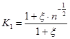
где x - коэффициент вариации прочности образцов льда на одноосное сжатие (Rc) при отсутствии натурных данных допускается принимать x = 0,2;
K2 - коэффициент «взаимовлияния» равный:
при b/l ³ 1 K2 = Kb(n)/Kb;
при 0,1 < b/l < 1 К2 определяется линейной интерполяцией между значениями Kb(n)/ Kb и 1;
при b/l £ 0,1 К2 = 1,
где Kb(n) и Kb - коэффициенты смятия для системы опор и для единичной опоры соответственно, значения которых следует определять из табл. 4, при этом:
Kb(n) определяется при соотношениях bf/hd = nf×b/hd;
Kb определяется при соотношениях b/hd,
где b, hd - обозначения те же, что и в п. 2.1.6;
l - расстояние по фронту между осями опор, м;
bf - общая ширина опорных колонн по фронту сооружения,
bf = nf×b,
где nf - число колонн по фронту сооружения.
2.1.8. Вертикальную Fv.p и горизонтальную Fh.p составляющие нагрузки от подвижки ледяного поля на отдельно стоящую опору конической формы при отсутствии смерзания со льдом следует определять соответственно по формулам:
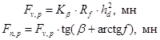
где Kb - коэффициент, определяемый из зависимости:
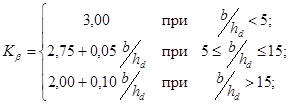
b - ширина (диаметр) конической опоры на уровне действия льда, м;
b - угол наклона образующей конуса (поверхности опоры) к горизонтали;
f - коэффициент трения льда по конической поверхности опоры;
в случае выполнения ледорезной ее части из металла следует принимать f = 0,2.
Примечание. В случае смерзания поверхности ледорезной части конических опор с ледяным полем, нагрузка определяется как на цилиндрическую опору (см. п. 2.1.6) с диаметром, равным диаметру конуса на уровне льда.
2.1.9. Для учета торосистости льда необходимо значения нагрузок на опоры сооружений от действий ровных ледяных полей, определяемых согласно требованиям пп. 2.1.6 - 2.1.8 при отсутствии смерзания льда с опорами, умножить на коэффициент Kт, принимаемый согласно табл. 1.
2.1.10. Вертикальную нагрузку Fd,c на отдельно стоящую опору (или свайный куст) от примерзшего к сооружению ледяного поля при изменении уровня воды следует определять по формуле:
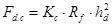
где Кс - безразмерный коэффициент, принимаемый в виде
Кс = 0,6 + 0,15 b/hd.
Примечание.
В случае прямоугольной формы опоры в плане со сторонами «с» и «d» или сооружения,
состоящего из ряда колонн или куста свай с внешними габаритами опорной части на
уровне действия льда «с» и «d» следует поперечный размер (или «диаметр») сооружения принимать
равным 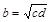
2.1.11. Величина локальной ледовой нагрузки, используемая для расчета местной прочности и устойчивости конструкции опоры, принимается в соответствии с табл. 5.
Таблица 5
|
hd×0,5hd |
hd×hd |
hd×2hd |
hd×3hd |
hd×4hd |
hd×5hd |
|
|
Ледовая нагрузка |
6,5Rс |
6,0Rс |
4,5Rс |
4,0Rс |
3,0Rс |
2,5Rс |
Примечание: Площадь приложения локальной ледовой нагрузки определяется зоной действия ровного ледяного поля при заданных поперечных размерах опоры с учетом колебаний уровня воды.
2.2. Нагрузки и воздействия ветра
2.2.1. Нагрузки от ветра на конструкции и их элементы следует определять в соответствии со СНиП 2.01.07-85 и ВСН 51.3-85.
2.2.2. При наличии ледового покрова, коэффициент изменения скоростного напора по высоте должен соответствовать коэффициенту изменения скоростного напора открытой местности по СНиП 2.01.07-85.
2.2.3. Расчетные площади элементов следует определять с учетом их возможного обледенения, определяемого по «Рекомендациям по расчету массы льда при морском обледенении надводных объектов», ААНИИ, Ленинград, 1984 г.
2.3. Нагрузки и воздействия от волн
Нагрузки и воздействия от волн на вертикальные цилиндрические преграды
2.3.1. Нагрузки и воздействия от волн на вертикальные цилиндрические преграды при относительном диаметре преграды D/l £ 0,4 и относительной глубине d/l > 0,175 следует определять по СНиП 2.06.04-82*. При D/l = 0,2 ¸ 1,0 и d/l £ 0,175, а также D/l > 0,4 и d/l > 0,175 расчеты следует выполнять по рекомендациям настоящего раздела.
2.3.2. Максимальную линейную нагрузку от волн gmax, кН/м, на вертикальную цилиндрическую преграду на глубине z ³ 0, м от расчетного уровня воды (черт. 1а) следует определять по формуле:
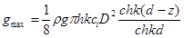
где: D - диаметр преграды, м;
r - плотность воды, т/м3;
g - ускорение силы тяжести;
h - высота волны, м;
ci -
инерционный коэффициент, зависящий от параметра 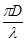
k = 2p/l - волновое число, рад/м;
l - длина волны, м;
d - глубина воды, м.
2.3.3. Максимальную силу от воздействия волн Qmax, кН, на вертикальную цилиндрическую преграду следует определять по формуле:
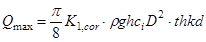
где К1,cor - поправочный коэффициент, учитывающий влияние возвышения свободной поверхности по контуру преграды при d/l £ <0,175 и определяемый по формуле:
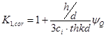
где коэффициент силы yQ определяется по графику на черт. 3 кривая 1. При d/l > 0,175 следует принимать К1,cor = 1.
Черт. 1.
Формы преград в виде тел вращения:
а - вертикальный круговой цилиндр; б - затопленный цилиндр; г - коническая преграда; в - цилиндрическая преграда с конической вставкой.
Черт. 2. График значений инерционного коэффициента Сi
2.3.4. При расчете опоры на сдвиг по сечению, расположенному на глубине z от расчетного уровня воды, максимальная сдвигающая сила Qz.max, кН, определяется по формуле
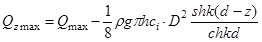
2.3.5. Максимальный опрокидывающий момент от воздействия Мmax, кНм, на вертикальную цилиндрическую преграду относительно точки О1 (см. черт. 1а) следует определять по формулe:
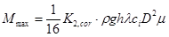
где K2,cor - поправочный коэффициент, учитывающий влияние возвышения свободной поверхности по контуру преграды при d/l £ 0,175 и определяемый по формуле
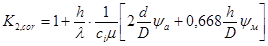
m - коэффициент, вычисляемый по формуле
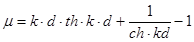
yм - коэффициент момента определяется по графику на черт. 3 кривая 2. При d/l > 0,175 следует принимать K2,cor = 1.
2.3.6. Максимальная вертикальная сила от воздействия волн Qz.max, кН, на сплошное дно вертикальной цилиндрической преграды, расположенной на каменной или крупногалечниковой постели, определяется по формуле
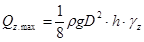
где gz - коэффициент максимальной вертикальной силы от воздействия волн на дно преграды с учетом проницаемости основания, определяемый по черт. 4. При прохождении вершины волны через вертикальную ось преграды сила Qz.max направлена вверх, при прохождении подошвы волны - вниз.
Черт. 3. Графики значений коэффициентов yQ и yм.
1 - для yQ; 2 - для yм
2.3.7. Максимальный общий опрокидывающий момент относительно точки О1 (см. черт. 1а) от воздействия волн Мроr.max, кНм, на вертикальную цилиндрическую преграду со сплошным дном, расположенную на каменной или крупногалечниковой постели, следует определять по формуле
Mpor,max = Mmax + Mz,por, (15)
где Mmax - определяется по формуле (11), а Mz,por - дополнительный опрокидывающий момент, действующий на дно преграды от вертикальных волновых давлений, определяется по формуле
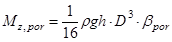
где bроr - коэффициент дополнительного опрокидывающего момента от воздействия волн на дно преграды с учетом проницаемости основания, определяемый по черт. 5.
2.3.8. Избыточное над гидростатическим волновое давление Р, кПа, в произвольной точке смоченной поверхности вертикальной цилиндрической преграды в момент времени, соответствующий наступлению максимумов нагрузок qmax и Qmax, следует определять по формуле
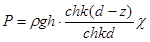
где z ³ 0 - расстояние по вертикали от расчетного уровня воды до рассматриваемой точки (см. черт. 1а);
c - коэффициент распределения давления по периметру цилиндрической преграды, определяемый по графику на черт. 6).
Черт. 4. График значений коэффициента gz максимальной вертикальной силы от воздействия воды на дно цилиндра с учетом проницаемости основания
Черт. 5. Графики значений коэффициента bроr дополнительного опрокидывающего момента от воздействия волн на дно цилиндра с учетом проницаемости основания
2.3.9. Максимальное возвышение гребня волны у контура вертикальной круглоцилиндрической преграды, hc.max, м, над расчетным уровнем воды следует определять по формуле
hc.max = xmax×hc,i, (18)
где hc,i - превышение вершины волны, с высотой обеспеченностью 0,1 % над расчетным уровнем воды, определяемое по СНиП 2.06.04-82*;
xmax - коэффициент максимального возвышения волны у опоры, определяемый по табл. 6.
Таблица 6
|
D/l |
0,08 |
0,10 |
0,15 |
0,20 |
0,30 |
0,40 |
0,5 |
0,6 |
0,8 |
1,0 |
|
xmах |
1,00 |
1,10 |
1,40 |
1,55 |
1,72 |
1,78 |
1,82 |
1,85 |
1,91 |
1,96 |
2.3.10. Максимальную донную скорость Vb,max, м/с, у контура и в окрестности вертикальной цилиндрической преграды следует определять по формуле
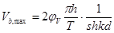
где jV - коэффициент максимальной донной скорости, определяемый по графикам на черт. 7.
Максимальная
донная скорость, определяемая через коэффициент jV по черт. 7, кривая 1,
возникает у точек контура цилиндрической преграды, расположенных под углами q =
90° и 270° к лучу волны. Максимальная донная скорость в окрестности
цилиндрической преграды, определяемая по черт. 7, кривая 2, возникает в точке, расположенной впереди
преграды (q =
0) на расстоянии l от контура
преграды, определяемом следующим образом: при 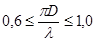 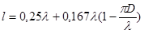 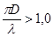
Черт. 6. Графики значений коэффициента распределения давления по периметру цилиндрической преграды c(ka, q):
1 - q = 0°; 2 - q = 15°; 3 - q = 30°; 4 - q = 45°; 5 - q = 60°; 6 - q = 75°; 7 - q = 90°; 8 - q = 105°; 9 - q = 125°; 10 - q = 135°; 11 - q = 150°; 12 - q = 165°; 13 - q = 180°
Черт. 7. Графики значений коэффициента максимальной донной скорости jV:
1 - у контура цилиндрической преграды; 2 - в окрестности преграды
Нагрузки от волн на затопленный цилиндр
2.3.11. Расчет нагрузок от волны на затопленный цилиндр диаметром D (черт. 1б) при d - c ³ 2h (исходные волны не разрушаются над кровлей затопленного цилиндра) следует выполнять по п.п. 2.3.12 - 2.3.14, где с - возвышение кровли цилиндра над дном. При d - c < 2 h допускается выполнять расчеты по п.п. 2.3.12 - 2.3.14 с обязательным уточнением результатами проведенных экспериментальных исследований.
2.3.12. Максимальную горизонтальную силу Qx,max, кН на затопленный цилиндр следует определять по формуле
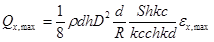
где ex,max - коэффициент максимальной горизонтальной силы от воздействия волн на затопленный цилиндр, определяемый по графикам на черт. 8;
R = D/2 - радиус цилиндра.
2.3.13. Максимальную вертикальную силу от воздействия волн Qz,max, кН на затопленный цилиндр при условии, что взвешивающее давление по подошве сооружения равно гидростатическому, следует определять по формуле
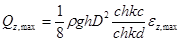
где ez,max - коэффициент максимальной вертикальной силы от воздействия волн на затопленный цилиндр, определяемый по графикам на черт. 9. При прохождении вершины волны через вертикальную ось затопленного цилиндра сила Qz,max направлена вниз; при прохождении подошвы волны - вверх.
Черт. 8. Графики значений коэффициента ex,max максимальной горизонтальной силы от воздействия волн на затопленный цилиндр
2.3.14. Максимальный общий опрокидывающий момент от воздействия волн Мmax, КНм, действующий на затопленный цилиндр относительно точки О1 (черт. 1б) при условии распределения взвешенного давления согласно п. 2.3.13, следует определять по формуле
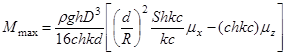
где mx и mz - коэффициенты опрокидывающего момента соответственно горизонтальной и вертикальной сил от воздействия волн на затопленный цилиндр определяются по графикам на черт. 10, 11.
Направление действия максимального общего опрокидывающего момента Мmax совпадает с направлением действия момента от Qx,max при Мmax > 0 и противоположно этому направлению при Мmax < 0.
Нагрузки от волн на цилиндрическую преграду с конической вставкой
2.3.15. Максимальную горизонтальную силу от воздействия волн Qx,max, кН, на цилиндрическую преграду с конической вставкой (см. черт. 1в) допускается определять по формуле
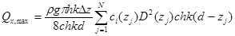
где N - произвольное число (10 ¸ 20) равновеликих интервалов Dz, м, по высоте преграды от расчетного уровня воды (z = 0) до дна (z = d);
zj - глубина центра j-го интервала от расчетного уровня воды, м;
D(zj) - диаметр сечения преграды на глубине zj, м;
ci(zj) - инерционный коэффициент,
соответствующий параметру 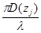
Черт. 9. Графики значений коэффициента ez,max максимальной вертикальной силы от воздействия волн на затопленный цилиндр
Черт. 10. Графики значений коэффициента mx опрокидывающего момента от горизонтальной волновой нагрузки на затопленный цилиндр
Черт. 11. Графики значений коэффициента mz опрокидывающего момента от вертикальной волновой нагрузки на затопленный цилиндр
На стадии рабочей документации расчеты горизонтальной и вертикальной сил, а также общего опрокидывающего момента от воздействия волн на цилиндрическую преграду с конической вставкой следует производить на основе результатов лабораторных исследований и теоретического решения задачи дифракции волн у преграды.
Нагрузки от волн на коническую преграду
2.3.16.
Расчет нагрузок от волн на конические преграды по п.п. 2.3.17 ¸ 2.3.19 производится при следующих условиях: 30° £ a £
60°; 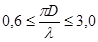 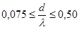
2.3.17. Максимальную горизонтальную силу от воздействия волн Qx,max, кН на коническую преграду следует определять по формуле
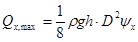
где yx - коэффициент горизонтальной силы, определяемый по графикам на черт. 12; R = D/2.
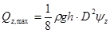
где yz - коэффициент вертикальной силы, определяемый по графикам на черт. 13. При прохождении вершины волны через вертикальную ось преграды Qz,max направлена вниз, при прохождении подошвы волны - вверх.
Черт. 12. Графики значений коэффициента yx горизонтальной силы от воздействия волн на конические преграды
2.3.19. Максимальный общий опрокидывающий момент от воздействия волн Мmax, кНм, относительно точки О1 при условии распределения взвешивающего давления согласно п. 2.3.18 следует определять по формуле
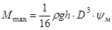
где yм - коэффициент общего опрокидывающего момента, определяемый по графикам на черт. 14.
Направление действия максимального опрокидывающего момента Мmax совпадает с направлением действия момента Qx,max для пунктирных кривых на черт. 14 и противоположно этому направлению для сплошных кривых.
Примечание.
При расчете
сооружений, указанных в п.п. 2.3.1
- 2.3.19 на сдвиг и
вычислении напряжений в их основании изменение относительных сил от воздействия
волн 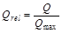 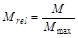
2.4. Нагрузки и воздействия от судов
2.4.1. При расчете ледостойких гравитационных сооружений на нагрузки от судов необходимо определять:
нагрузки от волн на суда при одноточечной швартовке, согласно п. 2.4.2 настоящего раздела;
нагрузки от навала судна при его подходе к сооружению в условиях ветра, течения и волн, согласно требованиям п. 2.4.3 настоящего раздела;
нагрузки от натяжения швартовов в условиях ветра, течения и волн при одноточечной схеме причаливания с кормовым (носовым) закреплением судов, согласно требованиям п.п. 2.4.5 и 2.4.6;
нагрузки от ветра, течения и волн на суда, согласно СНиП 2.06.04-82*.
Черт. 13. Графики значений коэффициента yz вертикальной силы от воздействия волн на конические преграды
Черт. 14. Графики значений коэффициента yм общего опрокидывающего момента от воздействия волн на конические преграды
Черт. 15. Графики изменения относительных волновых нагрузок и опрокидывающих моментов за период волны
hrel = h/hc - относительное превышение взволнованной поверхности над расчетным уровнем; а - вертикальный круговой цилиндр; б - затопленный цилиндр; в - коническая преграда
2.4.2. Амплитуду продольной N, кН горизонтальной нагрузки от действия волн на судно, пришвартованное по одноточечной схеме, следует определять по СНиП 2.06.04-82*;
æ - коэффициент, принимаемый по СНиП 2.06.04-82* и табл. 7.
Т - осадка судна в м; при Тv/lmt > 0,2 æ определяют по СНиП 2.06.04-82*, при Тv/lmt < 0,2 - по табл. 7.
Таблица 7
|
0,82 |
0,79 |
0,76 |
0,73 |
0,7 |
0,6 |
0,5 |
|
|
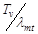 |
0,05 |
0,07 |
0,08 |
0,09 |
0,1 |
0,15 |
0,2 |
2.4.3. Кинетическую энергию навала судна Еq, кДж, при подходе его к нефтегазопромысловому сооружению при отсутствии волнения, ветра и течения следует определять по СНиП 2.06.04-82*, где нормальная составляющая скорости подхода судов малого водоизмещения принимается по табл. 8.
Таблица 8
|
Водоизмещение судна, m в тыс. т |
1 - 2 |
3 |
4 |
5 |
|
Нормальная составляющая скорости подхода судна V, м/с |
0,22 |
0,18 |
0,16 |
0,15 |
При наличии волнения с высотой до 1,5 м, прижимного ветра со скоростью до 15 м/с или течения в том же направлении со скоростью до 0,5 м/с нормальная составляющая скорости подхода судна должна быть увеличена в 1,41 раза, при одновременном учете двух факторов - в 1,73 раза, при учете трех факторов - в 2 раза.
Черт. 16. Схема расчета для одноточечной швартовки
2.4.4. Поперечную горизонтальную силу Fq, кН, от навала судна при подходе к сооружению в условиях волнения, ветра и течения необходимо определять для значения энергии Eq, кДж, вычисленного с учетом п. 2.4.3 и в соответствии с требованиями СНиП 2.06.04-82*.
2.4.5. Динамические нагрузки от судна, закрепленного к причалу в одной точке (одноточечная схема швартовки, черт. 16) с носовым (или кормовым) якорем, при одновременном воздействии ветра, течения и волнения, совпадающих по направлению с его диаметральной плоскостью, определяются по максимальным суммарным перемещениям ytot клюзовой точки, м, по формуле:
ytot = yw + yc + yv, (27)
где yw, yc - перемещения судна от воздействия ветра и течения в направлении действующих сил; усилия определяются в соответствии с требованиями СНиП 2.06.04-82*, перемещения определяются по жесткостной характеристике швартовной системы S(y) которая представляет собой связь между усилиями и деформациями каната (см. черт. 17);
yv - амплитуда, м, вынужденных колебаний судна определяется по формуле
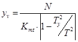
где Kmt - среднее значение коэффициента жесткости, кН/м;
Т - средний период волнения;
Ty - собственный период продольных колебаний судна;
N - амплитуда продольной, кН, горизонтальной нагрузки определяется по СНиП 2.06.04-82*.
Собственный период продольных колебаний Ty определяется по формуле
, (29)
где Kmt - среднее значение коэффициента жесткости в кН/м для смещенного положения статического равновесия судна в т. О1 (черт. 17) численное значение Kmt может быть получено при замене нелинейного участка жесткостной характеристики S(y) касательной в точке О1, тогда Kmt = tga.
Черт. 17. Жесткостная характеристика связи
2.4.6. Расчетные нагрузки в связи определяются по суммарным перемещениям судна ytot и жесткостной характеристике связей S(y) (черт. 17).
Примечание. При схемах швартовки, отличных от рассмотренных в п. 2.4.5, динамические усилия в связи определяются экспериментальным путем.
2.5. Учет сейсмических нагрузок и воздействий
2.5.1. Сейсмические воздействия следует учитывать при проектировании стационарных платформ, возводимых на площадках сейсмичностью 7, 8 и 9 баллов.
Проектирование морских стационарных платформ на площадках с сейсмичностью более 9 баллов допускается только по согласованию с Госстроем СССР.
2.5.2. Определение характеристик сейсмического воздействия производится в районах сейсмичностью 6 баллов и выше. Материалы изысканий должны содержать характеристику сейсмического режима района строительства, данные о сейсмологических параметрах сейсмогенных зон (магнитуды, глубины очагов, эпицентральные расстояния, повторяемость землетрясений, сейсмичность площадки, спектральные характеристики сейсмических воздействий в зависимости от инженерно-геологических условий площадки), расчетные записи акселеграмм, велосиграмм, сейсмограмм.
Для акваторий, по которым отсутствуют данные сейсмического микрорайонирования шельфовых зон, допускается ориентировочно назначать сейсмичность площадки строительства согласно СНиП II-7-81. Расчетную сейсмичность для морских стационарных платформ следует принимать равной сейсмичности площадки.
2.5.3. Расчет конструкций стационарных платформ, проектируемых в сейсмических районах, должен выполняться на основные и особые сочетания нагрузок с учетом сейсмических воздействий.
Рекомендуется учитывать в расчетной схеме возможность вращения сооружения вокруг вертикальной оси и податливость основания. В расчетах должны учитываться масса сооружения и присоединенная масса воды, которую допускается определять как массу вытесненной воды.
2.5.4. Расчеты ледостойких стационарных платформ на особые сочетания нагрузок с учетом сейсмических воздействий следует выполнять согласно СНиП II-7-81 и п.п. 2.5.7 - 2.5.11.
2.5.5. При расчете ЛСП влияние ледового поля должно быть учтено введением в расчетную схему дополнительных связей, имитирующих условия контакта сооружения с ледяным полем.
2.5.6. В расчетах прочности морских стационарных платформ по одномерной (консольной) и двухмерной (плоской) схемам следует учитывать горизонтальные сейсмические воздействия, причем выбирается наиболее опасное для данной конструкции или ее элементов направление воздействия.
В расчетах прочности по пространственной расчетной схеме следует учитывать одновременное воздействие двух горизонтальных компонент сейсмического ускорения, которые могут считаться некоррелированными, причем их максимумы принимаются соответственно равными Agcosj и Agsinj, (j ≈ 56° по статистическим данным).
В расчетах устойчивости морских стационарных платформ следует учитывать наиболее опасное горизонтальное или наклонное под углом 30° к горизонтальной плоскости сейсмическое воздействие.
2.5.7. В общем случае при расчете на воздействие сейсмических ускорений в направлении горизонтальных ортогональных осей x, у, величины сейсмических сил ( и ), действующих вдоль каждой их этих осей на элемент с массой mk, отнесенной к точке k сооружения, при его колебаниях по i-й форме собственных колебаний следует определять по следующим формулам:
, (30)
, (31)
, (32)
где K0 - коэффициент надежности, принимаемый равным 2,5;
К1 - коэффициент, учитывающий допускаемые повреждения, определяется по СНиП II-7-81;
К2 - коэффициент, учитывающий конструктивные решения, принимаемый равным 1 или по СНиП II-7-81;
A - коэффициент определяемый по СНиП II-7-81;
g - ускорение силы тяжести;
bi - коэффициент динамичности, соответствующий i-й форме собственных колебаний сооружения, определяемый на основании спектральных характеристик сейсмического воздействия для выбранной строительной площадки; при отсутствии таких данных определяется по СНиП II-7-81;
di - логарифмический декремент колебаний сооружения по i-й форме, допускается принимать по СНиП II-7-81;
d = d0 = 0,314;
tз - условная продолжительность сейсмического воздействия, которую допускается принимать равной ~ 15 с;
- коэффициенты, зависящие от формы i деформации сооружения в направлении x, y соответственно, определяемые по п. 2.5.8.
, (33)
, (34)
, (35)
B = cos2j C = sin2j - для 1-го варианта,
B = sin2j C = cos2j - для 2-го варианта,
где mj - масса, сосредоточенная в точке j;
xij, yij - смещения в точке j сооружения при связанных колебаниях по i-й главной форме в направлении осей x, y соответственно.
Для сооружений гравитационного типа и сооружений, рассчитываемых по консольной схеме на действие горизонтальных сейсмических ускорений, расчет допускается выполнять по формулам:
, (36)
, (37)

где qj - момент инерции j-й массы сооружения относительно горизонтальной оси, проходящей через центр тяжести основания перпендикулярно плоскости колебаний;
jij - угол поворота j-й массы при свободных колебаниях по i-й форме. При этом должны выполняться следующие условия:
.
2.5.9. Расчетные значения поперечной и продольной сил, изгибающего и крутящего моментов, нормальных и касательных напряжений в конструкциях от сейсмической нагрузки, приложенной к сооружению в виде квазистатических сил или в общем случае следует определять по формуле:
, (38)
где Ni; Ni+1 - значения усилий или напряжений в рассматриваемом сечении, вызываемых сейсмическими нагрузками, соответствующими i-й и i + 1-й формам собственных колебаний сооружения;
n - число учитываемых в расчете форм собственных колебаний сооружения;
Ai,i+1 - коэффициент, учитывающий взаимную корреляцию i-й и i + 1-й обобщенных координат, определяемый по 2.5.10.
При расчете по пространственной расчетной схеме усилия Np, соответствующие воздействиям в направлении каждой из осей, рассматриваются как взаимно некоррелированные. При расчете по консольной расчетной схеме указанные усилия рассматриваются раздельно.
Если центры масс сооружения не совпадают с центрами жесткостей, то в консольной схеме должны учитываться крутящие моменты относительно вертикальной оси, равные произведению сейсмических сил на соответствующие эксцентриситеты между центрами масс и жесткостей.
2.5.10. Значения коэффициентов Ai,i+1 могут определяться по формулам:
(39)
В случае di = di+1 » 0,3 практически можно принимать Ai,i+1 = 0 если периоды Тi, Ti+1 отличаются более, чем на 10 %.
2.5.12. При расчете на прочность и устойчивость должен вводиться дополнительный коэффициент условия работы, определяемый по СНиП II-7-81.
3. ОСНОВАНИЯ И ФУНДАМЕНТЫ
3.1.
Свайные фундаменты.
Проектирование свайных фундаментов
3.1.1. Исходными данными для проектирования фундаментов ЛСП являются результаты инженерных изысканий, выполненные в соответствии с ВСН 51.2-84, действующие нагрузки и воздействия, конструктивные особенности проектируемого сооружения.
3.1.2. Техническое задание на изыскания должно составляться генеральным проектировщиком при участии организации, разрабатывающей проект фундаментов, включать разработку программы работ.
Программа должна быть согласована c организацией, выдавшей техническое задание на производство изысканий.
3.1.3. Основными параметрами, определяющими несущую способность оснований и их деформации, являются прочностные и деформационные характеристики грунтов, позволяющие выполнять расчеты как с использованием моделей, базирующихся на теориях упругости и предельного равновесия, так и моделей, обеспечивающих прогноз поведения основания при возникновении в нем пластических зон.
3.1.4. Нормативные и расчетные значения характеристик грунтов следует принимать в соответствии с ГОСТ 20522-75 «Грунты. Метод статистической обработки результатов определений характеристик».
3.1.5. Доверительная вероятность расчетных значений характеристик грунтов принимается равной при расчетах оснований по несущей способности a = 0,95; при расчетах оснований по деформациям a = 0,85.
При соответствующем обосновании на основе согласованного решения проектной и изыскательской организации допускается принимать большую доверительную вероятность расчетных значений характеристик грунтов, но не выше 0,99.
3.1.6. Расчетная схема системы сооружение - фундамент - основание должна выбираться с учетом расчетной схемы сооружения, характера напластований и свойств грунтов, особенностей возведения и т.д. Рекомендуется учитывать также упругопластические и реологические свойства, влияние повторности и скорости нагружения, изменение порового давления грунта.
3.1.7. Расчет свайных фундаментов и оснований должен выполняться согласно СНиП 2.02.03-85 по 2-м группам предельных состояний:
по первой группе, по прочности конструкции сваи и несущей способности грунтов;
по второй группе, по осадке основания свайного фундамента от вертикальных нагрузок, по перемещениям свай в грунте.
3.1.8. Расчет свайных фундаментов по прочности конструкции производится в зависимости от их материала с учетом требований СНиП 2.02.03-85.
3.1.9. Свайные фундаменты по несущей способности грунтов основания при действии осевых нагрузок следует рассчитывать по СНиП 2.02.03-85, ВСН 51.3-85.
Величина коэффициента надежности gк принимается в соответствии со СНиП 2.02.03-85 и таблицей 9.
Допускается уточнять метод расчета по рекомендуемому Приложению 2.
Таблица 9
|
Значение коэффициента надежности gк при |
||
|
основном сочетании |
особом сочетании |
|
|
Одиночные сваи |
1,4 |
1,3 |
|
Группы свай |
1,3 |
1,2 |
|
Свайные ленты и поля |
1,3 |
1,2 |
Несущую способность свай следует определять как наименьшее из значений несущей способности, полученных по расчету:
несущей способности грунтов;
прочности конструкции сваи.
3.1.10. Свайные фундаменты по второй группе предельных состояний (по деформациям) рассчитывают по формуле:
S £ Sпр, (40)
где: S - расчетная величина деформации сваи или свайного фундамента в целом,
Sпр - предельно допустимая величина деформации, устанавливаемая:
по горизонтальному смещению верха конструкции ЛСП;
по деформациям (горизонтальным перемещением, осадкам и углам поворота) свай в уровне опорных закреплений в соответствии с заданием на проектирование, исходя из эксплуатационных и технологических требований.
Примечания. 1. Расчеты одиночных свай постоянной по длине жесткости на действие горизонтальной нагрузки в однородных грунтах основания допускается проводить по СНиП 2.02.03-85.
2. Расчет свайных фундаментов на совместное действие вертикальной и горизонтальной нагрузок и момента рекомендуется вести по прил.
3.1.11. Свайные фундаменты и конструкции опорного блока ЛСП должны проектироваться совместно.
Проектирование осуществляется в несколько этапов, включающих предварительную оценку габаритов и конструктивной схемы опорного блока, нагрузок на основание, анализа инженерно-геологических условий, назначения конструкции и параметров свай (диаметра, длины, величин расчетных осевых и горизонтальных нагрузок), способов их погружения, деформативности опорного блока, жесткостных характеристик системы «свая - грунт» для совместного расчета.
3.1.12. Необходимость проектирования дополнительных (юбочных) свай устанавливается расчетом.
3.1.13. Расчет свай, расположенных на расстоянии свыше 7D (D - диаметр сваи), следует проводить как одиночных; при расстоянии менее 7D - с учетом взаимного влияния свай (приложение 3).
3.1.14. При назначении количества свай и их размещении в конструкции опорного блока необходимо учитывать габаритные размеры стапельных устройств на заводе металлоконструкций и опорных устройств специальных транспортных средств, применяемых для транспортировки опорного блока к месту его установки на акватории (барже специального назначения).
3.1.15. Направляющие дополнительных (юбочных) свай должны проектироваться в составе опорного блока, обеспечивать жесткое сопряжение с ним для передачи усилий на сваи, а также проектное положение свай. Высоту направляющих следует определять, исходя из принятой конструкции сопряжения, рассчитанной на восприятие осевых и горизонтальных нагрузок, передаваемых на сваи.
3.1.16. Внутри основных стоек опорного блока и направляющих дополнительных (юбочных) свай должны предусматриваться фиксаторы, ограничивающие смещение свай внутри них в соответствии с заданными допусками в период выполнения строительно-монтажных работ.
Диаметры и глубины погружения основных и дополнительных (юбочных) свай могут быть различными.
3.1.17. Передачу усилий от опорного блока на сваю следует осуществлять через узлы сопряжения, которые должны быть рассчитаны на расчетные усилия, воспринимаемые сваей в месте сопряжения с опорным блоком.
3.1.18. При проектировании фундаментов ЛСП следует учитывать возможность образования и развития местного размыва.
Расчет глубины местного размыва у опор ЛСП рекомендуется производить по методике МИСИ (предварительных расчетов).
3.1.19. Противоразмывная защита вокруг ЛСП выполняется в сроки, обеспечивающие надежную работу сооружения с учетом динамики изменения гидрологических параметров в месте строительства платформы.
3.2. Основания и фундаменты платформ гравитационного типа
3.2.1. Основания гравитационных платформ рассчитываются по двум группам предельных состояний.
Расчеты по первой группе включают:
а) определение несущей способности основания в целом при действии наиболее опасных сочетаний нагрузок;
б) расчет сопротивления основания задавливанию выступающих частей конструкции при установке платформы;
в) определение реактивного сопротивления грунта по контакту с фундаментом при основном и особом сочетаниях нагрузок;
г) оценку местной устойчивости грунта от размывов и других локальных воздействий при установке платформы и ее эксплуатации.
3.2.2. Расчет несущей способности должен обеспечить прочность и общую устойчивость сооружения.
Для гравитационных платформ с заглубленными конструктивными элементами расчет производится по схеме заглубленных фундаментов с плоской подошвой на уровне низа этих элементов. Для прочих гравитационных платформ расчет производится как для незаглубленных фундаментов с плоской подошвой.
3.2.3. Расчет несущей способности производится для полностью дренируемых или полностью недренируемых грунтов. В последнем случае расчет проводится в полных напряжениях при условии
|t| £ Cu, (41)
где t - касательные напряжения, МПа;
Сu - сопротивление недренируемому сдвигу, МПа,
или в эффективных напряжениях при условии
- эффективное нормальное напряжение;
sn - полное нормальное напряжение;
u - поровое давление, определяемое методами фильтрационной теории консолидации грунтов согласно СНиП 2.02.01-83.
Равенство в формулах 41 и 42 достигается на площадках скольжения.
Из результатов различного типа расчетов следует выбирать тот, который соответствует минимальной несущей способности.
3.2.4. Расчет оснований по несущей способности производится, исходя из условия
, (43)
Fp, Fu - расчетные значения обобщенной нагрузки и предельного сопротивления основания соответственно;
gc - коэффициент сочетания нагрузок (СНиП 2.06.01-85);
gm - коэффициент условия работы, определяется по таблице 10;
gн - коэффициент надежности по назначению принимается в соответствии со СНиП 2.06.01-85.
Черт. 18
Для круглой подошвы:
Для прямоугольной подошвы:
- приведенная ширина фундамента;
 - приведенная длина фундамента;
- приведенная длина фундамента;
eb - эксцентриситет по стороне b;
el - эксцентриситет по стороне l.
Несущая способность связана со средней предельной нагрузкой (давлением) qu на основание соотношением
, (44)
где - приведенная площадь фундамента, зависящая от формы фундамента и эксцентриситета нагрузки в расчетной плоскости подошвы, определяется по черт. 18.
3.2.5. Несущая способность нескальных оснований определяется методами теории предельного равновесия грунтовой среды. При этом допускается использование:
а) трехчленной формулы Терцаги (см. п. 3.2.6);
б) методов, основанных на нахождении наиболее опасной поверхности скольжения (см. п. 3.2.7).
Таблица 10
|
Метод расчета |
||
|
а |
б |
|
|
Песчаные грунты |
0,85 |
0,8 |
|
Пылево-глинистые грунты |
0,8 |
0,75 |
где: Nс, Nq, Nj - безразмерные коэффициенты, зависящие от расчетного угла внутреннего трения грунта j;
ic, iq, ij - коэффициенты влияния угла нагрузки, зависящие от угла наклона к вертикали d равнодействующей всей нагрузок на уровне подошвы фундамента и угла j;
nr, nq, nc - коэффициенты влияния формы опорной части фундамента;
c - расчетное значение сцепления грунта;
q¢ = g¢h - расчетное значение пригрузки;
h - заглубление, равное глубине погружения юбки в основание;
g¢ - удельный вес скелета грунта с учетом взвешивания в воде.
Вышеназванные коэффициенты допускается определять по формулам:
Здесь соотношение сторон условного прямоугольного фундамента;
- условная приведенная длина.
В вычисляемую по формулам (45), (46) несущую способность входит вес грунта (с учетом взвешивания в воде) в пределах площади платформы выше плоскости заглубления.
3.2.8. Оценку запаса устойчивости платформы на сдвиг следует производить по формулам (41), (42). При наличии юбки нужно учитывать ее сопротивление горизонтальному смещению по формулам для расчета пассивного давления на подопорную стенку.
3.2.9. При расчете несущей способности учитывается влияние цикличности нагружения при помощи снижения прочностных характеристик грунта или повышения порового давления. Снижение прочности глинистых грунтов и нарастание порового давления в песчаных грунтах при многократном приложении нагрузки следует оценивать на основании лабораторных испытаний и наблюдений за поведением и свойствами аналогичных натурных грунтов, работающих в сходных условиях.
3.2.10. При расчете задавливания юбки и других выступающих частей фундамента на требуемую глубину используют формулы удельного лобового и бокового сопротивления согласно СНиП 2.02.03-85 с повышающим коэффициентом 2.
Расчет нагрузок на юбки, днища и другие выступающие части конструкции следует производить методами теории предельного равновесия с учетом неоднородности контакта.
3.2.11. Во время установки и работы платформы должна быть обеспечена гидравлическая устойчивость грунта основания. Для этого следует изучить и оценить возникающие фильтрационные потоки и силы и вызванные ими разупрочнение и эрозию грунта.
3.2.12. Расчеты по 2-ой группе предельных состояний включают:
а) краткосрочные и длительные осадки и крены;
б) смещения под действием длительно действующих и многократных нагрузок;
в) динамические реакции системы сооружение-основание при заданной частоте волнового воздействия.
3.2.13. Расчет деформаций основания следует производить c учетом многократно-повторного характера приложения нагрузки и вероятности возникновения нагрузок (волновых, ледовых, сейсмических и т.д.).
3.2.14. Расчетная схема основания в расчетах по второй группе предельных состояний должна выбираться в виде линейно или нелинейно-деформируемого полупространства или слоя конечной толщины. Последняя схема принимается, когда в пределах сжимаемой толщи основания расположен скальный грунт.
3.2.15. Предпроектные расчеты деформаций допускается производить по схеме линейно-деформируемого пространства с условием ограничения глубины сжимаемой толщи исходя из соотношения величин дополнительного давления от фундамента (по вертикали, проходящей через ее центр) и природного бытового эффективного давления на той же глубине . Это соотношение для фундаментов с шириной в плане превышающей 20 м, берется равным 0,5; при ширине меньше 10 м - равным 0,2; при промежуточных ширинах - по линейной интерполяции.
3.2.16. Если в условиях линейного расчета глубина зон, в которых нарушается условие предельного сопротивления сдвигу, превосходит 1/10 ширины опорной части, следует вести расчет с использованием модели нелинейно-деформируемого полупространства.
3.2.17. Для оснований, сложенных пылевато-глинистыми грунтами, следует проводить расчеты изменения деформаций во времени с использованием теорий фильтрационной консолидации, нелинейного деформирования скелета грунта и ползучести. При этом необходимо определять поровое давление и фильтрационные силы для использования в расчетах по 1-ой группе предельных состояний.
Как линейный, так и нелинейный расчеты должны производиться с применением деформационных характеристик, соответствующих условиям полного водонасыщения и взвешивания основания.
3.2.16. Для уменьшения избыточного порового давления в днище фундамента, по его краям и площади следует устраивать дренажные скважины или выполнять гравийную или песчаную подушку.
4. МЕТАЛЛИЧЕСКИЕ КОНСТРУКЦИИ
Сталь для конструкций и их соединений
Требования, предъявляемые к сварке
4.1. Марки стали и их расчетные сопротивления для конструкций ЛСП следует принимать по таблице 1 обязательного приложения 4, СНиП II-23-81 и СНиП 2.03.11-85.
4.2. Сталь, предназначенная для изготовления сварных соединений опорных блоков, должна подвергаться ультразвуковому контролю сплошности и удовлетворять требованиям приложения.
Расчетные сопротивления металла швов стыковых соединений сталей с разными значениями предела текучести следует принимать как для стали с меньшим значением нормативного сопротивления.
4.3. При проектировании стальных конструкций платформ следует обеспечивать технологичность изготовления и монтажа конструкций и свободный доступ к местам выполнения сварных соединений.
4.4. Все сварочные работы на заводе-изготовителе и на монтаже должны производиться по специально разработанной документации на производство сварочных работ конкретного типа металлоконструкций платформ в полном соответствии с чертежами КМД, СНиП III-18-75, СНиП III-4-79, настоящими нормами и дополнительными требованиями, согласованными с проектной организацией.
4.5. Размеры сварных угловых швов следует принимать в соответствии со СНиП II-23-81.
4.6. Для расчетных и конструктивных сварных соединений в проекте должны быть указаны виды сварки, электроды или сварочная проволока, положение шва при сварке.
4.7. Конструктивные формы сварных соединений должны соответствовать ГОСТ 5264-80, ГОСТ 8713-79, ГОСТ 14771-76, ГОСТ 16037-80, ГОСТ 11533-75, ГОСТ 11534-75 и проекту производства сварочных работ.
4.8. Все сварные швы должны иметь плавный переход к основному металлу и иметь гладкую поверхность, расположение и размеры зон обработки должны быть указаны в КМД.
4.9. В сварных стыковых соединениях листов разного сечения в целях обеспечения плавного перехода сечения от меньшей толщины к большей следует предусматривать скосы у более толстого листа с одной или двух сторон с уклоном не более 1:5.
4.10. При проектировании ЛСП следует предусматривать стыковые сварные соединения с двух сторонней сваркой и полным проваром.
4.11. При использовании для металлоконструкций платформ сталей марок 14Г2АФ (Д), 16Г2АФ (Д), ВСт3сп5, 09Г2С (Д) и 12ХГДАФ следует применять материалы для сварки, указанные в табл. 2 обязательного приложения 4.
4.12. Качество швов сварных соединений для крепления сборочных и монтажных приспособлений должно быть не ниже качества основных швов.
4.13. Контроль качества швов сварных соединений должен осуществляться следующими методами:
систематическая проверка выполнения заданного технологического процесса сборки и сварки;
наружный осмотр 100 % швов с проверкой размеров;
механические испытания контрольных образцов по ГОСТ 6996-66 и СНиП III-18-75;
металлографическое исследование макрошлифов на торцах швов контрольных образцов или на торцах стыковых швов сварных соединений;
послойная цветная дефектоскопия сварных швов соединений по ГОСТ 18442-80;
контроль швов ультразвуковой или радиационной дефектоскопией 100 % всех расчетных швов по ГОСТ 7512-69;
испытание сварных швов на плотность, 100 % соединений элементов, используемых для плавучести.
4.14. Трещины всех видов и размеров в швах сварных соединений не допускаются.
Несплавления по кромкам, непровары на участках, где проектом предусмотрено сквозное проплавление, не допускаются.
Подрезы сварных швов не допускаются.
4.15. В стыковках и угловых швах сварных соединений конструкций допускаются единичные поры или шлаковые включения диаметром не более 1 мм для стали толщиной до 25 мм и не более 4 % толщины, но не более 3 мм для стали толщиной более 25 мм, в количестве не более четырех дефектов на участке шва длиной 400 мм. Расстояние между дефектами должно быть не менее 50 мм.
4.16. Цветная дефектоскопия выполняется по ГОСТ 18442-80, а также с учетом рекомендаций «Методическое руководство по цветной дефектоскопии деталей и сварных швов»; ОСТ 36-76-83 «Контроль неразрушающий. Сварные соединения трубопроводов и конструкций. Цветной метод», разработанным ВНИИМонтажспецстрой, Москва, И26-7-74 Отраслевая инструкция «Контроль методом цветной дефектоскопии», Москва, ВНИПТИхиммаш, 1975; «Инструкция по цветной дефектоскопии сварных соединений», Киев, Укрмонтажспецстрой, 1974.
4.17. Выбор и проектирование систем защиты от коррозии следует производить в зависимости от степени агрессивного воздействия среды на конструкции опорной части платформы согласно ГОСТ 51.64-80.
4.18. Способы защиты металлоконструкций в зоне атмосферной коррозии выбирают согласно СНиП 2.03.11-85 и табл. 11.
Таблица 11
|
Характеристика солей, аэрозолей и пыли |
Степень агрессивного воздействия среды на металлоконструкции в морской атмосфере |
Способ защиты металлоконструкций от коррозии |
|
|
Сухая |
Хорошо растворимые малогигроскопические |
Слабоагрессивная |
1. Газотермическое напыление алюминия (d = 120 мкм) с последующей пропиткой лакокрасочными материалами II, III групп |
|
2. Газотермическое напыление алюминия (d = 250 мкм) |
|||
|
3. Окрашивание лакокрасочными материалами II, III, IV групп |
|||
|
Нормальная |
Хорошо растворимые гигроскопичные |
Среднеагрессивная |
1. Газотермическое напыление алюминия (120 - 180 мкм) с последующей пропиткой лакокрасочными материалами III и IV групп |
|
2. Газотермическое напыление алюминия (d = 250 мкм) |
|||
|
3. Окраска лакокрасочными материалами III и IV групп |
|||
|
Влажная |
Хорошо растворимые гигроскопичные |
Сильноагрессивная |
1. Газотермическое напыление алюминия (d = 250 мкм) с последующей пропиткой лакокрасочными материалами IV группы |
|
2. Окраска лакокрасочными материалами IV группы |
Защита металлоконструкций в зоне периодического смачивания выполняется с применением металлических, лакокрасочных и смазочных защитных покрытий согласно СНиП 2.03.11-85, ГОСТ 9.032-74.
В подводной зоне должна применяться электрохимическая защита неокрашенных металлоконструкций, осуществляемая с помощью протекторов или от внешнего источника тока.
Критерием выбора схемы электрохимической защиты (протекторная, от внешнего источника тока, окрашенных или неокрашенных конструкций) является экономическое обоснование.
Проектирование систем электрохимической защиты производится специализированными организациями и включает выбор типа защиты, расчет системы, размещение элементов и разработку электрической схемы соединений.
Металлоконструкции в зоне данного грунта следует защищать электрохимическим способом без дополнительного окрашивания.
4.19. Для улучшения коррозионной стойкости ЛСП следует выполнять следующие конструктивные требования:
новые конструктивные материалы (стали и сплавы, а также их сварные соединения) должны быть использованы только после их испытаний на коррозию;
избегать образования зазоров и щелей, притуплять углы фасонок и других элементов снятием фаски шириной 3 ¸ 5 мм;
избегать наличия вогнутостей, задерживающих скопление влаги на поверхности металлоконструкций, в сплошных поверхностях - следует предусматривать дренажные отверстия, предусматривать сварку встык или замкнутых угловых швов; при необходимости соединения внахлестку зазоры должны закрываться непрерывной сваркой. При сварке следует обеспечивать полный провар и исключить пористость и зазоры;
избегать конструктивных форм, вызывающих турбулентность;
необходимо использовать конструктивные решения, облегчающие доступ к поверхности металлоконструкций для ее очистки и нанесения защитных покрытий;
необходимо уменьшать количество связевых элементов, а также уменьшать количество сварных стыков в зоне развития максимальной коррозии - нижняя треть зоны периодического смачивания.
Основные положения расчета
4.20. Расчет стальных конструкций ЛСП должен производиться в соответствии со СНиП II-23-61, ВСН 51.3-85 и настоящих ВСН.
Расчет следует вести на стадиях: транспортировки, монтажа и эксплуатации с учетом соответствующей расчетной схемы.
4.21. Усилия в элементах платформы должны определяться с учетом совместной работы опорного блока и основания.
4.22. Расчет трубчатых стержней длиной r следует проверять на общую (при центральном и внецентренном сжатии) и местную устойчивость в соответствии со СНиП II-23-81.
4.23. При r проверку на общую и местную устойчивость следует вести в зависимости от - относительной толщины стенки трубы.
t - толщина стенки трубы, r - радиус трубы.
Если - следует производить расчет на общую (при центральном и внецентренном сжатии) и местную устойчивость в соответствии со СНиП II-23-81.
Если - проверка устойчивости не требуется.
Если и следует вести проверки на потерю общей и местной устойчивости совместно.
- при центральном сжатии.
- при внецентренном сжатии.
Коэффициенты y, j, jl, с - следует принимать по СНиП II-23-81.
Величину l, необходимую для нахождения значений j и jl определяют по формуле
,
где: m - коэффициент измерения длины трубы в зависимости от условий закрепления ее концов.
При и :
расчет на общую устойчивость следует производить при центральном и внецентренном сжатии в соответствии со СНиП II-23-81;
расчет на местную устойчивость следует производить в соответствии со СНиП II-23-81.
При этом в случае центрального сжатия расчетное напряжение следует определять с учетом случайных эксцентриситетов:
,
где g0 принимается по графику черт. 19.
В случае тонкостенных стержней (tr < 1/200) критические напряжения местной потери устойчивости рекомендуется определять по деформированной схеме путем учета деформации контура поперечного сечения по формуле
,
где r - радиус кривизны деформированного контура для точки, где радиус оказывается наибольшим (черт. 20).
Черт. 19. График значений коэффициента начальных эксцентриситетов
Черт. 20. Деформация контура поперечного сечения трубчатого элемента при изгибе
Деформация контура поперечного сечения может не учитываться при подкреплении диафрагмами с шагом или менее.
4.24. Опоры в виде сплошной оболочки (цилиндрической, конической или комбинированной), подкрепленной продольными и кольцевыми ребрами с жесткой диафрагмой, рассчитывают по безмоментной теории с учетом краевых эффектов в местах присоединения диафрагм и мест перехода от конической оболочки к цилиндрической.
Такие оболочки могут быть рассчитаны также по программам «СПРИНТ», «РАМОК».
При расчете опорного блока, состоящего из нескольких оболочек, необходимо предварительно распределить нагрузку на каждую из оболочек.
4.25. Прочность оболочек с ярко выраженной ортотропией, в предположении, что коэффициент Пуассона равен нулю, проверяется по формулам
, (47)
, (48)
где gс - коэффициент условия работы, определяется по СНиП II-23-80, ВСН 51.3-85;
sx - нормальные напряжения от продольной, поперечной сил и изгибающего момента;
sy - напряжения в кольцевом направлении;
txy - касательные напряжения от поперечной силы.
4.26. Проверка устойчивости при совместном действии нормальных и касательных напряжений производится по формуле:
, (49)
где scr, tcr - критические напряжения, равные меньшему из полученных по 2-м расчетным схемам; или для оболочек с относительно сильными продольными ребрами.
Методика расчета каркасированной оболочки приведена в обязательном приложении 5.
4.27. Расчет статической прочности бесфасоночных узлов трубчатых элементов следует производить согласно ВСН 51.4-85 Мингазпрома.
4.28. Расчет прочности узловых соединений с учетом сопротивления хрупкому разрушению следует выполнять согласно обязательному приложению 6.
5. ЖЕЛЕЗОБЕТОННЫЕ КОНСТРУКЦИИ
5.1. При проектировании железобетонных ЛСП необходимо соблюдать требования СНиП 2.03.01-84, СНиП 2.06.08-87 и настоящих BCH.
5.2. Для преднапряженных конструкций сжимающие напряжения в стадии предварительного сжатия не должны превышать значений, указанных в СНиП 2.03.01-84 и таблице 12.
Таблица 12
|
Отношение предварительного обжатия бетона к передаточной прочности |
|||||
|
при расчете температуры воздуха, °С |
|||||
|
- 40 °С и выше |
ниже - 40 °С |
||||
|
при обжатии |
|||||
|
центральном |
внецентренном |
центральном |
внецентренном |
||
|
1. Напряжение в бетоне уменьшается или не изменяется при действии внешних нагрузок |
0,65 0,55 |
0,75 0,65 |
0,55 0,45 |
0,65 0,55 |
|
|
2. Напряжение в бетоне увеличивается при действии внешних нагрузок |
0,50 0,45 |
0,55 0,50 |
0,40 0,35 |
0,45 0,40 |
|
Примечания: 1. Для бетона в водонасыщенном состоянии при температуре ниже - 40 °С отношение уменьшают на 0,05.
2. Над чертой - при натяжении на упоры, под чертой - при натяжении на бетон.
3. При наличии косвенной арматуры или стальных опорных деталей отношение равно 0,8.
5.3. Суммарные напряжения сжатия в стадии эксплуатации от преднапряжения, силовых и температурно-влажностных воздействий для конструкций ЛСП не должны превышать 0,6 расчетного сопротивления бетона сжатия при нормальных условиях.
5.4. Суммарные напряжения растяжения в бетоне в стадии эксплуатации от преднапряжения, силовых и температурно-влажностных воздействий для конструкций ЛСП при наличии требования трещиностойкости, не должны превышать 0,3 расчетного сопротивления бетона растяжению при нормальных условиях.
5.5. При отсутствии специальных оболочек из стали или других материалов, предотвращающих истечение нефти или масел, в элементах, ограждающих емкости в эксплуатационной стадии, должны сохраняться сжимающие напряжения (s = N/А), не меньше чем 0,5 МПа.
5.6. Материалы конструкций (бетон, его компоненты, арматура), находящиеся при эксплуатации в пределах воздействия морской воды, ее брызг и в контакте с ледяными полями и с грунтом морского дна, должны удовлетворять требованиям СНиП 2.06.08-87.
5.7. Призменная прочность бетона зоны переменного уровня воды не должна быть менее 40 МПа. Для остальных случаев минимальный класс бетона по прочности устанавливается в соответствии с требованиями СНиП 2.03.01-84 и СНиП 2.06.08-87.
5.8. Минимальные марки бетона по водонепроницаемости и морозостойкости устанавливаются на основании таблицы 18.
5.9. Для омоноличивания стыков и узлов следует применять бетоны проектной марки (по прочности, морозостойкости и водонепроницаемости) не ниже класса бетона основных конструкций, если она равна В 35 и более. Для конструкций меньшего класса бетона, чем В 35, омоноличивание должно осуществляться бетоном с классом на одну ступень выше класса бетона основной конструкции.
5.10. При расчетах элементов конструкций ЛСП, расчетные сопротивления бетона Rb и Rb,ser следует дополнительно умножать на коэффициент условий работы бетона при сжатии gbt (при расчете на первое замораживание) или на коэффициент gbe (при расчете на длительное попеременное замораживание и оттаивание), а расчетные сопротивления бетона на растяжение Rbt и Rbt,ser - на коэффициент надежности при растяжении, равный gbS,t = 1,1gbt,e (при расчете на первое замораживание) и gbt,e = 0,9gbe (при расчете на длительное попеременное замораживание и оттаивание).
5.11. Коэффициенты условий работы бетона gbt и gbe определяются по формулам:
(50)
где Qt и Qe, - коэффициенты, принимаемые по табл. 13 в зависимости от эксплуатационной зоны бетона и проектной марки бетона по морозостойкости;
tb - абсолютное значение расчетной зимней температуры бетона конструкции, °С.
5.12. При воздействии низких температур начальный модуль упругости бетона рекомендуется умножать на коэффициент bbt, учитывающий повышение модуля упругости бетона при первом замораживании, или на коэффициент bbc, учитывающий снижение модуля упругости бетона при длительном попеременном замораживании и оттаивании.
5.13. Коэффициенты bbt и bbc определяются по формулам:
,
где bt и bc определяются по табл. 13 в зависимости от эксплуатационной зоны бетона и проектной марки бетона по морозостойкости.
5.14. Коэффициенты линейного температурного расширения бетона естественного твердения ab в зависимости от условий работы, температуры, и проектной марки бетона по морозостойкости принимаются по табл. 14.
Таблица 13
|
Обозначения коэффициентов |
Коэффициенты условий работы при проектной марке по морозостойкости |
||||||
|
100 |
150 |
200 |
300 |
400 |
500 |
||
|
I, II |
at |
- |
2 |
2,0 |
1,9 |
1,8 |
1,7 |
|
bt |
- |
1,8 |
1,8 |
1,7 |
1,6 |
1,65 |
|
|
aс |
0,3 |
0,4 |
0,55 |
0,7 |
0,8 |
0,9 |
|
|
bc |
0,1 |
0,25 |
0,3 |
0,5 |
0,65 |
0,8 |
|
|
at |
2,0 |
1,9 |
1,9 |
1,8 |
1,7 |
1,6 |
|
|
III, IV |
bt |
1,8 |
1,7 |
1,7 |
1,6 |
1,5 |
1,4 |
|
V, VI |
aс |
0,6 |
0,7 |
0,8 |
0,9 |
0,95 |
1 |
|
bc |
0,4 |
0,5 |
0,65 |
0,8 |
0,9 |
1 |
|
Таблица 14
|
Коэффициент линейной температурной деформации бетона при расчетной температуре бетона, °С (ab´106) |
||||||||
|
Выше - 10 °С |
от - 10 °С до - 45 °С |
Ниже - 45 °С |
||||||
|
при проектной марке по морозостойкости |
||||||||
|
от 100 до 500 включит. |
100 |
150 |
200 |
300 |
400 |
500 |
от 100 до 500 включит. |
|
|
I, II |
11 |
- 14 |
- 13 |
- 12 |
- 10 |
- 8 |
- 5 |
7 |
|
III, IV, V, VI |
10 |
10 |
10 |
10 |
10 |
10 |
10 |
10 |
5.15. Арматуру железобетонных конструкций ЛСП следует назначать согласно главам СНиП 2.03.01-84, СНиП 2.06.08-87 и табл. 18.
Основные положения расчета по несущей способности и пригодности к нормальной эксплуатации
5.16. Железобетонная конструкция в целом и все ее элементы должны быть рассчитаны по несущей способности на:
а) прочность железобетонных конструкций в соответствии с указаниями СНиП 2.03.01-84, СНиП 2.06.08-87 и настоящих норм;
б) сопротивление температурным и влажностным воздействиям в соответствии с указаниями СНиП 2.03.01-84, СНиП 2.06.08-87;
в) устойчивость формы в соответствии с указаниями СНиП 2.03.01-84, СНиП 2.06.08-87;
г) выносливость при многократных нагружениях в соответствии с указаниями СНиП 2.03.01-84 и СНиП 2.06.08-87;
д) сопротивление температурным и влажностным воздействиям совместно с силовыми воздействиями статически неопределимых железобетонных конструкций в соответствии с указаниями настоящих норм.
5.17. Прочность на продавливание плитных конструкций и стен оболочек (без поперечной арматуры) следует рассчитывать по формуле:
gglcP £ aPbtUmh0, (52)
где Р - продавливающая сила (равнодействующая давления льда);
a - коэффициент, принимаемый равным 1 для конструкции из тяжелого бетона и 0,8 для конструкций из легкого бетона;
Um - средний периметр пирамиды продавливания;
h0 - полезная высота сечения.
При наличии поперечной арматуры прочность на продавливание следует определять по формуле:
, (53)
где сопротивление поперечной арматуры FS,w определяется по формуле:
.
5.18. Расчет прочности стены железобетонной оболочки на местное действие ледовой нагрузки следует производить:
а) при действии на оболочку сосредоточенной силы Р:
ZS - плечо внутренней пары сил в сечении;
АSme; ASml - площадь продольной арматуры, расположенной соответственно у наружной и внутренней поверхности стенки;
АSre ASmi - то же кольцевой арматуры;
б) при действии нагрузки q, расположенной на части периметра оболочки длиной l:
где q - расчетное давление льда на 1 м периметра на уровне контакта со льдом.
Рекомендуется назначать отношение площадей арматуры в пределах:
AS,m,l/AS,m,i = 0,2 ¸ 1;
AS,r,l/AS,r,i = 0,2 ¸ 1.
Полученная из расчета по формулам (54) и (55) арматура должна устанавливаться по всему периметру сооружения и на расстояние не меньшее, чем 6 толщин стены вверх и вниз от уровня моря.
5.19. По пригодности к нормальной эксплуатации рассчитывают:
а) прогибы, углы поворота, амплитуды и частоты колебаний по формулам строительной механики с учетом требований СНиП 2.03.01-84 и СНиП 2.06.08-87;
б) трещиностойкость предварительно напряженных железобетонных конструкций в соответствии с СНиП 2.03.01-84, СНиП 2.06.08-87;
г) трещиностойкость, ширину раскрытия трещин и прогибы от совместного действия нагрузок, температуры, влажности и усадки в соответствии с указаниями настоящих норм.
5.20. Моменты вдоль образующей Мх и направляющей Mj при расчете трещиностойкости оболочки следует определять по асимптотическим формулам.
При действии ледовой нагрузки, равномерно распределенной вдоль направляющей (по дуге кольца с углом a = 135° ÷ 180°), моменты Мх и Mj, отнесенные к 1 м, равны:
, (56)
где q - погонная нагрузка, равномерно распределенная по дуге и по вертикали;
R - радиус кольца оболочки в месте приложения ледовой нагрузки;
n - коэффициент Пуассона.
Для ледовой нагрузки, приложенной по произвольному закону вдоль образующей, и заменяемой системой сосредоточенных сил, соответствующие моменты равны:
, (57)
где Pi - сосредоточенная нагрузка, приложенная по нормали к поверхности оболочки в точке с координатой Ri относительно точки приложения равнодействующей.
Расчет на температурно-влажностные воздействия
5.21. При расчете температурных напряжений в качестве расчетной температуры при первом замораживании следует использовать абсолютную минимальную температуру, при циклическом замораживании и оттаивании температуру наиболее холодной пятидневки обеспеченностью 0,92. Методика определения расчетных температур приведена в рекомендуемом приложении 7.
5.22. Одновременное действие расчетного нагружения и температурного воздействия с учетом изменений жесткости сечений из-за пластических деформаций в бетоне, образования и развития трещин учитывается по формуле:
Р = Pq + jfor×Pt, (58)
где Pq - действие внешней нагрузки;
Pt - действие температуры, вычисленное для упругой стадии работы конструкции;
jfor - коэффициент, учитывающий изменение жесткости сечения вследствие пластических деформаций, в частности, образования и развития трещин.
Для растянутых элементов график, отражающий коэффициент jfor = jN имеет две ветви:
- до образования трещин:
jN = 1; (59)
- после образования трещин:
. (60)
Для изгибаемых элементов коэффициент jfor = jM также имеет две ветви:
- до образования трещин:
jM = 0,8
- после образования трещин:
. (61)
Осевая жесткость Bax внецентренно сжатых элементов и внецентренно растянутых элементов с большими эксцентриситетами (по линии интерполяции):
, (62)
где x - относительная высота сжатой зоны бетона.
Изгибная жесткость этих элементов при 0 £ x £ xr
; (63)
при 1 ³ x ³ xr
. (64)
Здесь xr - граничная высота сжатой зоны бетона, определяемая по СНиП 2.03.01-84 и СНиП 2.06.08-87.
При необходимости учесть усилия, возникающие при одновременном действии нагрузок и влажностном воздействии в формулу (58) вместо Pt следует подставить Pw - действие влажностных деформаций, вычисленное на упругой стадии работы конструкции.
5.23. Совместное действие нагрузок и температурно-влажностных деформаций при расчетах прочности следует учитывать по формулам табл. 15.
Таблица 15
|
Вид напряженного состояния |
Расчетные формулы |
|
|
1 |
Центральное растяжение от силового и температурного воздействия |
|
|
2 |
Центральное сжатие от силового и центральное растяжение от температурного воздействия |
1) |
|
3 |
Изгиб одного знака от действия силовой и температурной нагрузок |
|
|
4 |
Изгиб противоположных знаков от действия силовой и температурной нагрузок |
2) |
|
5 |
Внецентренное сжатие и растяжение3) от силы при изгибе, внецентренном сжатии и растяжении от температуры |
4) |
|
6 |
Внецентренное растяжение с малыми эксцентриситетами от силы и температуры |
|
Примечания:
1) при |Nlon + Ng| > jNNt расчет не производится;
2) при |Mlon + Mg| ³ jMMt расчет не производится;
3) кроме внецентренного растяжения с малыми эксцентриситетами;
4) при внецентренном сжатии с большими эксцентриситетами sS = RS.
При расчетах по стадии работы в условиях циклического замораживания и оттаивания в расчетные формулы вместо gbt следует вводить gbc.
5.24. Совместное действие нагрузок и температурно-влажностных деформаций при расчетах трещиностойкости можно учитывать по формулам табл. 16.
Таблица 16
|
Вид напряженного состояния |
Расчетная формула |
|
|
1. |
Центральное сжатие от силового и центральное растяжение от температурного воздействия |
|
|
2. |
Изгиб одного знака от действия силовой и температурной нагрузок |
|
|
3. |
Изгиб противоположных знаков от действия силовой и температурных нагрузок |
|
|
4. |
Внецентренное сжатие от силы при изгибе, внецентренном сжатии и растяжении от температуры |
|
|
5. |
Внецентренное сжатие от силы при центральном растяжении от температуры |
|
|
6. |
Внецентренное растяжение от силы и центральное растяжение от температуры |
|
Примечание: При расчетах по стадии работы в условиях циклического замораживания и оттаивания в расчетные формулы вместо gbt,t следует вводить gbt,c.
В таблицах 15 и 16 Nlon и Mlon - сила и момент от длительной временной нагрузки, Ng и Mg - сила и момент от постоянной нагрузки, e, e¢ - эксцентриситеты приложения внешней нагрузки соответственно относительно центров тяжести растянутой и сжатой арматур;
et, e¢t - то же равнодействующей температурного воздействия.
Расчетные температуры и температурные поля можно определять по приложению 7.
Конструктивные требования мероприятия по защите от коррозии
5.25. Железобетонные конструкции ЛСП должны удовлетворять конструктивным требованиям, содержащимся в СНиП 2.03.01-84 и СНиП 2.06.08-87 и требованиям настоящих норм.
5.26. Толщина железобетонных конструкций в зоне переменного уровня воды, непосредственного воздействия льда и в подводной зоне должна быть не менее величин, указанных в табл. 17.
Таблица 17
|
Минимальная толщина, м |
|
|
Стена цилиндрической, конической оболочки сборно-монолитной, монолитной |
0,8 |
|
Стена сборной конструкции ячеистого типа |
0,5 |
Примечание: Значения толщины стен даны для бетона классов В30 ¸ В40. При внедрении в практику бетонов более высоких марок и в ходе дальнейшего совершенствования практики проектирования необходимо уточнение указанных значений.
5.27. Сжатая зона бетона в элементах, подвергаемых гидростатическому давлению, при действии любой комбинации нагрузок должна составлять не менее 1/4 высоты сечения и не менее 0,10 м при разнице давлений, не превышающей 0,15 КПа, и не менее 0,20 м при большей разнице давлений.
5.28. Защитный слой при обычном армировании следует назначать по таблице 18 настоящих норм. Кроме того, защитный слой не должен быть меньше 1,5 максимального размера крупного заполнителя.
5.29. Минимальная площадь арматуры у растянутой поверхности сечения для обеспечения благоприятного распределения трещин не должна быть меньше определяемой по формуле:
,
где sbt - растягивающее напряжение в бетоне;
Ras - расчетное сопротивление арматуры;
W - давление воды в трещине;
he - эффективная зона растяжения,
he = 1,5a + 10ds,
принимаемая не менее 0,2h и не более 0,5 (h - x).
Здесь a - защитный слой бетона;
ds - диаметр арматуры.
5.30. Поперечное армирование в местах сопряжений конструктивных элементов при значительной концентрации напряжений и там, где поперечные силы способствуют обеспечению целостности конструкции, должно быть не менее вычисляемого по формуле:
,
где b и h - размеры сечения элемента.